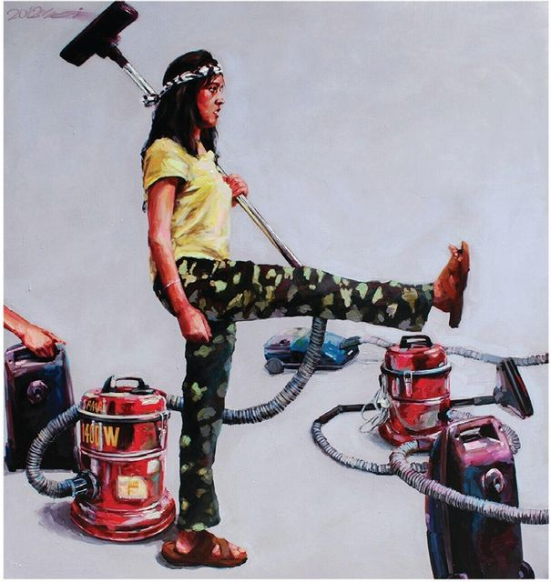
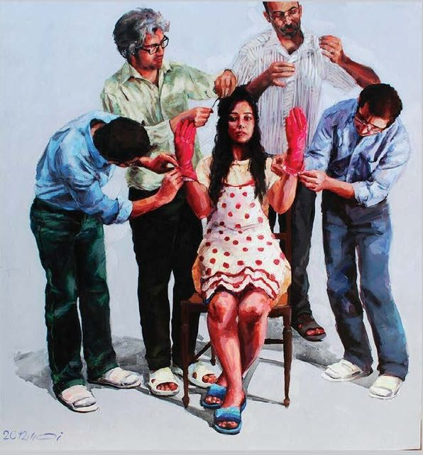
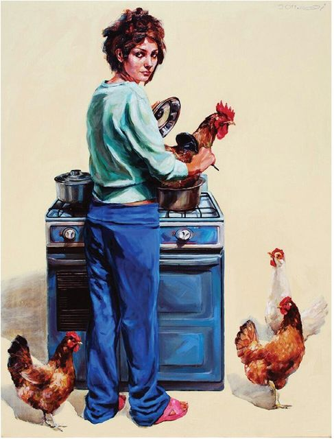
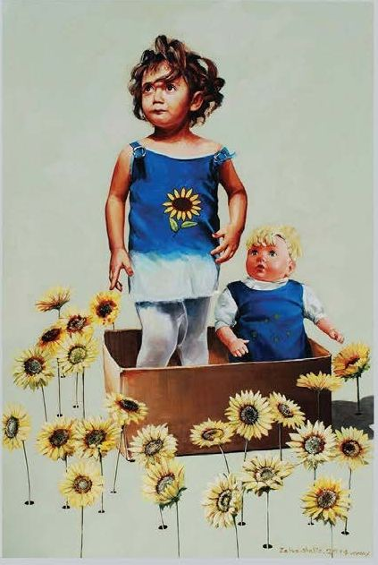
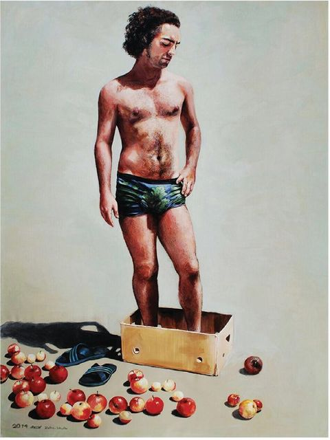
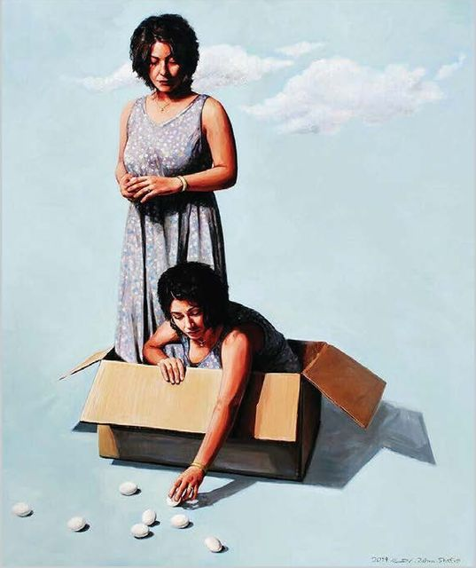
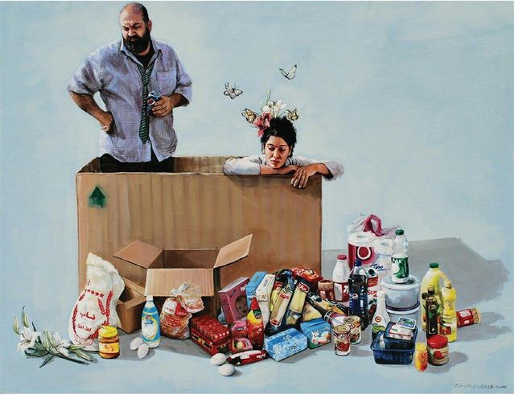
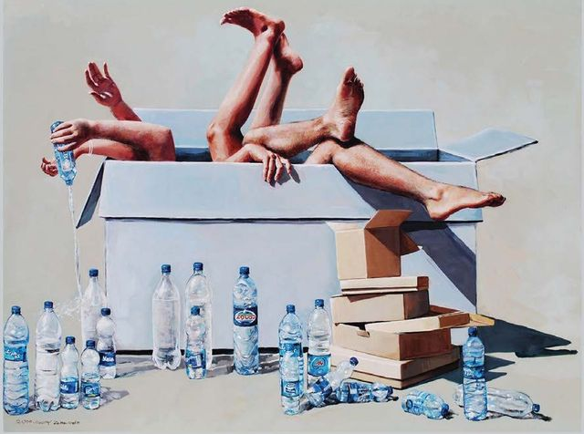

StatementAbout the work
The queens of kitchen
Behind the doors of our homes,
from the old fashion kitchens, which have been replaced by modern open countered ones, there was a time when the only sound you heard was not the whispers of a woman but the whistle of the kettle, and the boiling crock pot breaking the heavy silence of the house. These sounds are only familiar to the unstained crystal glasses on the shelves, Silverwares, baskets and pans arranged in the cabinets, the heap of clothes in the laundry basket and the handkerchiefs hanging in the kitchen.
The sound that is played every day in this timeless place will perhaps break the silence of the walls, to depict a motion and life. (Ding Ding), the bell rings. The tea is brewed. And the landlord is back home.
This is itself a reason to live.
Works9 artworks







New packages










History of experienceBiography · education · exhibitions · awards
Education
- 2003Graphic diploma from visual art conservatory|Tehran – Iran
- 2010BA in painting Shahed university of art|Tehran – Iran
Solo exhibitions
- 2015Welcome to the life's party, Vali gallery|Tehran – Iran
- 2012The queen of kitchen, Shirin gallery|Tehran – Iran
Group exhibition
- 2015(Hope dreams desire) Stattbad Wedding Berlin
- 2014Sheila gallery|Tehran – Iran
- 2014Iranian artist's forum|Tehran – Iran
- 2013Homa gallery|Tehran – Iran
- 2013Etemad gallery|Tehran – Iran
- 2013Installation, Dastan gallery|Tehran – Iran
- 2013Seyhoun gallery|Tehran – Iran
- 2013The second exhibition of Iranian artist's forum|Tehran – Iran
- 2012Seyhoun gallery|Tehran – Iran
- 2012Miami art fair
- 2011Homa gallery|Tehran – Iran
- 2010Silk road gallery|Tehran – Iran
- 2010Elahe gallery|Tehran – Iran
- 2010Shirin gallery|Tehran – Iran
- 2010(Haft negah group) Iranian artist's forum|Tehran – Iran
- 2008Installation, Laleh Gallery|Tehran – Iran
- 2008Shahed Gallery|Tehran – Iran
- 2008Shirin Gallery|Tehran – Iran
- 2007Participated in the first women's art festival Niavaran academy|Tehran – Iran
Source: the Sobhan Gallery artist catalogue “Zahra Shafie.pdf”.